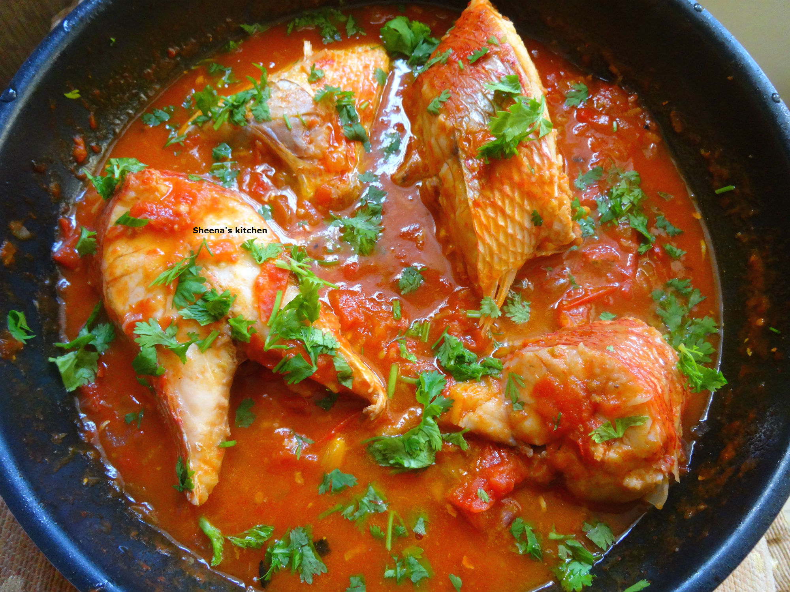

How to prepare wet fish
The following is a step by step guide for preparing wet fish.
Follow it religiously and end up with a sumptous meal
Ingredients
- 1 large whole fish (washed,Cut into chunks, patted dry)
- salt and black pepper (to season the fish-to taste)
- 1 tbsp vegetable oil
- 1 large onion(chopped)
- 2 garlic cloves (grated)
- 1 tsp grated ginger
- 1 fresh chili
- 4 medium-large ripe tomatoes (chopped)
- 1 cup water
- 1/4 tsp salt
- 1 tbsp royco
- 1 heaped tbsp of dhania
Steps
- In a deep man heat oil and fry onions until soft
- Addthe ginger,garlic,chili and fry until fragrant (do not brown)
- Add the chopped tomatoes, salt stir and simmer for about 5 minutes or until tomatoes are soft
- Add the royco stir, then add the water stir well cover, with a lid and simmer for another 5 minutes
- In the meantime, season your fish with salt and black pepper but remember to use sparingly as stew is already seasoned.
- Add the fish cover and simmer for 5-10 minutes or until fish is cooked through.
- Sprinkle the dhania on top and serve.
- Enjoy with ugali/rice/chapati/mash you decide and some greens.